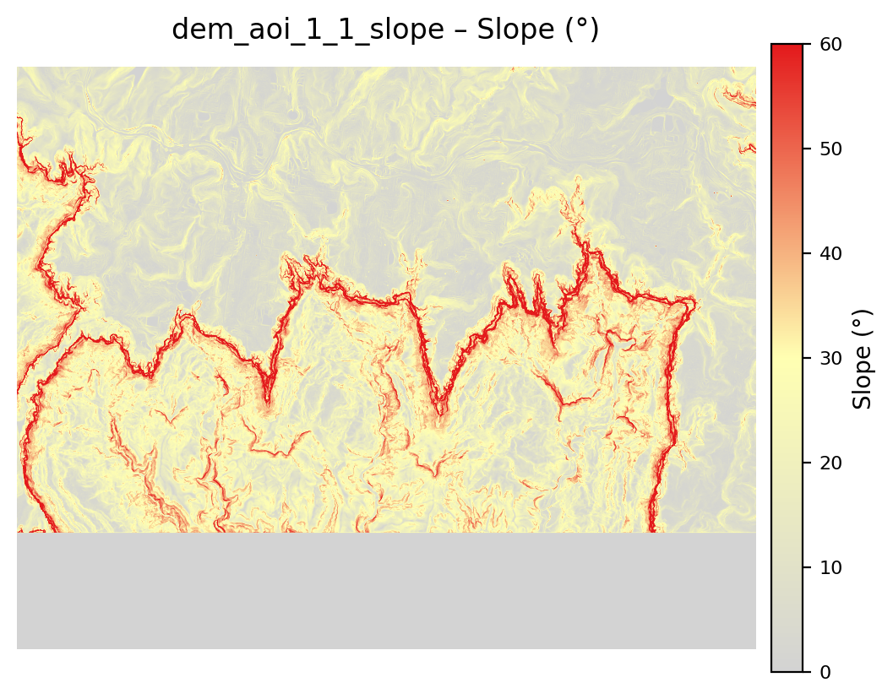

Interactive Slope Map
Map

Slopemap
Explore the interactive map by using the buttons above to navigate through the LiDAR data and slope information. Select different tiles above to load specific areas of interest in the grid layout. For further details, contact us or explore related news on our website.